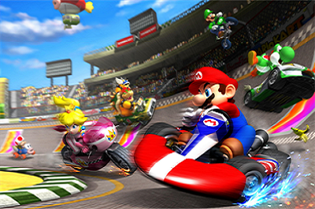

Blog Posts
Mario Kart Wii: Strategy Guide
It's safe to say that a Mario Kart race can get pretty intense. Here I explain how to unlock every character in the game, as well as getting 3-star rankings in Cup races.
Mario Kart Wii lets you play with 25 different characters from the expansive Mario universe. However, you may notice upon starting the game for the very first time you only have access to 12 of those characters. As you race your way through the eight Grand Prix Cups you will slowly start to unlock characters by completing their pre-determined unlock conditions. These conditions are not made explicitly available to the user in the game and some are so hard to get you might not even be aware of every character the game has to offer.
Here is every character you can unlock along with their trigger conditions
Characters Unlocked through Grand Prix:
| Character | Trigger Condition |
|---|---|
| King Boo | Place first in the 50cc Star Cup |
| Diddy Kong | Place first in the 50cc Lightning Cup |
| Baby Daisy | Earn a 1-star rank in all 50cc Wii Grand Prix Cups |
| Dry Bones | Place first in the 100cc Leaf Cup |
| Mii (Outfit A) | Place first in the 100cc Special Cup |
| Bowser Jr | Earn a 1-star rank in all 100cc Retro Grand Prix Cups |
| Daisy | Win 150cc Special Cup |
| Dry Bowser | Earn a 1-star rank in all 150cc Wii Grand Prix Cups |
| Rosalina | Earn a 1-star rank in all 150cc mirror Wii Grand Prix Cups OR Have saved data from Super Mario Galaxy on your Nintendo Wii System |
Characters Unlocked through Time Trials:
| Characters | Unlock conditions |
|---|---|
| Toadette | Attempt each course one time in Time Trials |
| Funky Kong | Unlock 4 fast staff ghosts in Time Trials |
| Baby Luigi | Unlock 8 fast staff ghosts in Time Trials |
| Birdo | Unlock 16 fast staff ghosts in Time Trials |
| Mii (Outfit B) | Unlock all 32 fast staff ghosts in Time Trials |
Getting 3-Star Rank on Grand Prix Cups
You may have noticed that you are be awarded with a Rank after completing a Grand Prix Cup. The rankings go from F (the lowest rank), to 3-star (the highest rank). Placing first in all 4 races of a cup, with minimal mistakes on the track, will almost certainly award you with a 2-star rank. However if you want an extra challenge, and a cool bragging right, you'll want to know how to get the elusive 3-star rank.
There are no official rules to follow in order to achieve this rank, but over the years Mario Kart fans have determined some fairly solid guidelines for ensuring you are granted the 3-star rank.
Positive Factors for Triple-Star Rank:
- Staying in first place
- Completing races as quickly as possible
- Remaining on the track
- Turbo boost at start of race
Negative Factors for Triple-Star Rank:
- Falling off the track
- Total time off-road
- Hitting walls or obstacles
- Being hit by items
Note: While heavily debated, using attacking items to advance your polling placement in a race may negatively affect your 3-star rank chances. It's best to use kart tricks and boosts to gain first position.
With this new information its time to grab the Wiimote and get to racing. Just remember, no one will judge you for yelling at your tv screen. We've all been there.